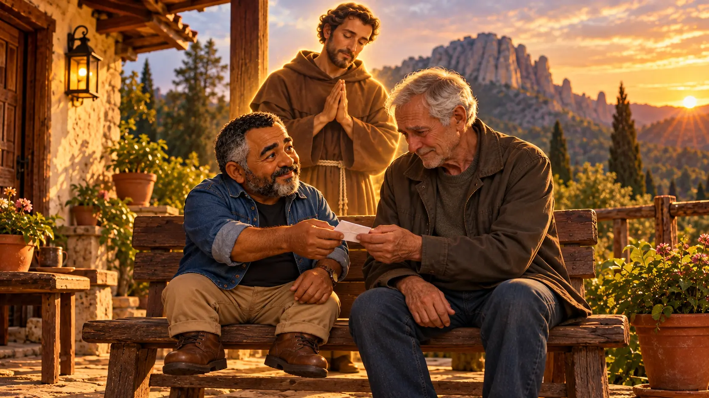

Louvores ao Deus Altíssimo: o bilhete de São Francisco a Frei Leão
Num tempo de angústia do amigo, Francisco não fez um sermão: escreveu à mão um pequeno pergaminho, com louvores a Deus de um lado e uma bênção do outro, e o entregou a Frei Leão. Uma oração sobre amizade, cuidado e confiança.

Um bilhete no Monte Alverne
Em setembro de 1224, dois anos antes de morrer, São Francisco subiu ao Monte Alverne, na Toscana, para quarenta dias de oração e jejum. Foi lá que ele recebeu no corpo as chagas de Cristo. Com ele estava Frei Leão, o seu secretário, confessor e um dos amigos mais próximos, a quem Francisco chamava carinhosamente de “ovelhinha de Deus”.
Naqueles dias, Leão atravessava uma forte angústia interior. Francisco percebeu, pediu papel e tinta e escreveu, com a própria mão, num pequeno pedaço de pergaminho: de um lado, os Louvores ao Deus Altíssimo, uma ação de graças pelo que tinha vivido no monte; do outro, uma bênção só para o amigo, assinada com o Tau, a cruz em forma de T que ele usava como assinatura. Depois disse a Leão que guardasse o bilhete até o fim da vida.
E Leão guardou. Carregou o pergaminho dobrado junto ao peito por quase cinquenta anos e ainda acrescentou, em tinta vermelha, umas linhas contando como ele tinha sido escrito. Esse bilhete existe até hoje: está exposto na Basílica de São Francisco, em Assis, e é um dos raros textos que temos escritos pela mão do próprio santo.
A oração
Louvores ao Deus Altíssimo
Tu és o santo Senhor, o único Deus, que fazes maravilhas.
Tu és forte. Tu és grande. Tu és altíssimo.
Tu és o Rei onipotente, tu, Pai santo, Rei do céu e da terra.
Tu és trino e uno, Senhor Deus dos deuses.
Tu és o bem, todo o bem, o sumo bem, Senhor Deus vivo e verdadeiro.
Tu és amor, caridade. Tu és sabedoria. Tu és humildade.
Tu és paciência. Tu és beleza. Tu és mansidão.
Tu és segurança. Tu és quietude. Tu és alegria.
Tu és a nossa esperança e a nossa felicidade.
Tu és justiça. Tu és moderação.
Tu és toda a nossa riqueza, e ela nos basta.
Tu és beleza. Tu és mansidão.
Tu és o protetor. Tu és o nosso guarda e defensor.
Tu és fortaleza. Tu és refrigério.
Tu és a nossa esperança. Tu és a nossa fé. Tu és a nossa caridade.
Tu és toda a nossa doçura.
Tu és a nossa vida eterna, grande e admirável Senhor,
Deus onipotente, misericordioso Salvador.
Bênção a Frei Leão
O Senhor te abençoe e te guarde.
Mostre-te a sua face e tenha misericórdia de ti.
Volte para ti o seu rosto e te dê a paz.
O Senhor te abençoe, Frei Leão.
Tradução de A Boa Idade a partir do texto original em latim, que começa assim: “Tu es sanctus Dominus Deus solus, qui facis mirabilia…” A bênção retoma as palavras do livro dos Números (6,24-26).
Para entender a oração
- “Tu és”: a oração inteira é feita de duas palavras repetidas. Francisco não pede nada: ele só olha para Deus e diz quem Ele é. É o louvor de quem acabou de viver um encontro profundo e não encontra palavras maiores.
- “Tu és humildade”, “tu és paciência”: Francisco chama Deus de humilde e paciente. Para ele, o Deus que se fez menino em Belém e morreu na cruz é um Deus que se abaixa para chegar até nós.
- “Toda a nossa riqueza, e ela nos basta”: é a frase de quem renunciou à fortuna do pai. Quem tem Deus tem o suficiente.
- A bênção: são as mesmas palavras que Deus ensinou a Moisés para que os sacerdotes abençoassem o povo. Francisco as escreveu com o nome do amigo no final, como quem diz: essa bênção é para você.
- O Tau: a letra T do alfabeto grego, em forma de cruz. Francisco o desenhava nas paredes, nas cartas e nas pessoas que abençoava, como sinal de que pertenciam a Cristo.
Uma palavra do Sr. Oliveira
Um bom amigo nem sempre chega sorrindo e fazendo piada de tudo. Há vezes em que ele chega em silêncio, senta ao seu lado e espera: um desabafo, uma lágrima, o momento certo para dizer “estou aqui”.
A oração é a forma como conversamos com Deus, pedindo e agradecendo. Feliz daquele que tem um amigo que entrega a Deus as suas aflições e batalhas, porque esse amigo sabe que ninguém, senão Deus, tem poder sobre a vida e a morte.
Foi assim que Francisco cuidou de Frei Leão. Não lhe deu um sermão: escreveu um bilhete com louvores a Deus e uma bênção, e o entregou ao amigo. Às vezes, a melhor coisa que podemos fazer por quem sofre é rezar por ele e deixar que ele saiba disso.
Para rezar hoje
Pense num amigo ou numa pessoa da família que está passando por um momento difícil. Reze por ela a bênção de Francisco, trocando “Frei Leão” pelo nome dela. E, se puder, faça como ele: mande uma mensagem, um bilhete ou faça uma ligação dizendo que você rezou por ela hoje. Pode ser o “estou aqui” que ela estava esperando.
Reze também as outras orações de Francisco: Oração diante do Crucifixo, Cântico das Criaturas e Saudação à Virgem Maria. E conheça a história completa dele em São Francisco de Assis: do filho do rico comerciante ao Pobrezinho de Deus.